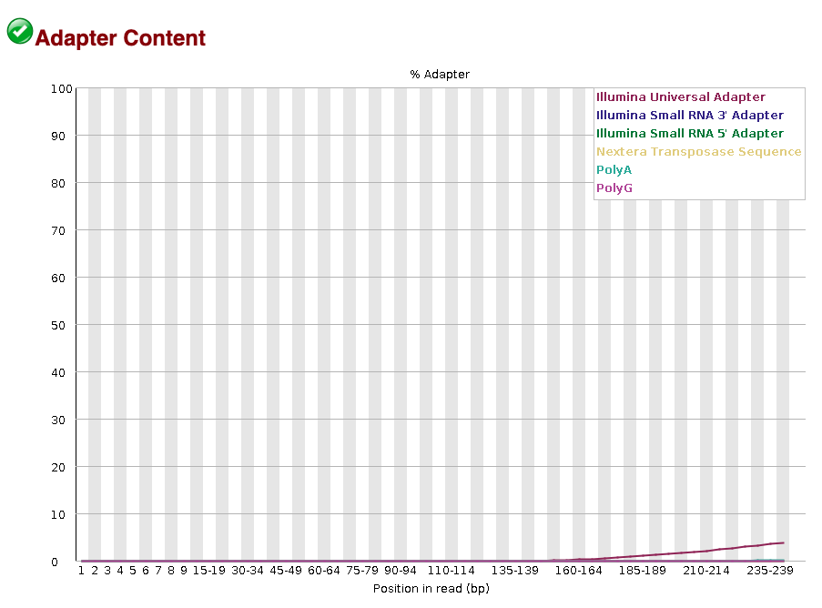

Sequencing Read Quality Control
Objective: When receiving fresh sequencing data, there are a few critical steps to ensure that sequences are good enough to be assembled into genomes. Poor quality sequencing data can lead to failed genome assemblies or misleading results. The main objective of this section is to assess sequencing data quality, and get the sequences cleaned up and ready for genome assembly. This step ensures that unwanted artifacts like sequencing adapters or low-quality sequences are removed before assembly.
Key considerations in sequence quality control:
- Sequence quality/PHRED score: a measure of the confidence in each base call; typically, a PHRED score >30 is considered high quality.
- Sequencing adapters: short artificial sequences used during library preparation that must be removed to avoid errors in genome assembly.
- Read length distribution: checking for unusually short or degraded reads that may indicate sequencing issues.
- GC content bias: deviations from expected GC content may suggest contamination or sequencing bias.
1. Initial quality control
The first step in quality control is to assess the overall quality of your raw sequencing data. For that, we use a popular tool called FastQC, which generates a comprehensive quality report for each FASTQ file.
1. Verify Raw Sequencing Files
Run the following command to confirm all expected FASTQ files are present.
ls 0.raw_reads/There should be 20 FASTQ files in 0.raw_reads/
raw.01_R1.fastq
raw.01_R2.fastq
raw.02_R1.fastq
raw.02_R2.fastq
raw.03_R1.fastq
raw.03_R2.fastq
raw.04_R1.fastq
raw.04_R2.fastq
raw.05_R1.fastq
raw.05_R2.fastq
raw.06_R1.fastq
raw.06_R2.fastq
raw.07_R1.fastq
raw.07_R2.fastq
raw.08_R1.fastq
raw.08_R2.fastq
raw.09_R1.fastq
raw.09_R2.fastq
raw.10_R1.fastq
raw.10_R2.fastq- Ensure forward (_R1) and reverse (_R2) reads are paired correctly.
- Use clear file-naming conventions for consistency.
2. Run FastQC
We will now look at the overall quality of the raw sequences with FastQC. Clear out previous modules to avoid conflicts and load FastQC.
module purge >/dev/null 2>&1
module load FastQC/0.12.1Run FastQC on the raw sequencing reads.
fastqc 0.raw_reads/*.fastq -o 1.raw_reads_QC/An update on FastQC process will automatically appear as follows:
Started analysis of raw.01_R1.fastq
Approx 5% complete for raw.01_R1.fastq
Approx 10% complete for raw.01_R1.fastq
Approx 15% complete for raw.01_R1.fastq
Approx 20% complete for raw.01_R1.fastq
Approx 25% complete for raw.01_R1.fastq
...3. Review FastQC Output
Let’s check what files were generated by FastQC.
cd 1.raw_reads_QC/
ls raw.01_R1_fastqc.html
raw.01_R1_fastqc.zip
raw.01_R2_fastqc.html
raw.01_R2_fastqc.zip
raw.02_R1_fastqc.html
raw.02_R1_fastqc.zip
raw.02_R2_fastqc.html
raw.02_R2_fastqc.zip
...Generated files include .html files (quality reports viewable in a web browser) and .zip files (detailed raw data as text files).
Now let’s have a look at one of the FastQC .html files, and inspect key metrics:
- General statistics
- Per Base Quality Scores: High-quality sequences should have median scores above 28.
- Adapter content: High levels indicate adapter contamination that must be removed.

- Per Sequence GC Content: Deviations may suggest contamination.
Look for consistent quality across samples and identify problematic samples requiring special attention (i.e. red/yellow flags).
4. Summarize results with MultiQC
MultiQC compiles multiple FastQC output files into an interactive report for easier interpretation, which is useful when you have an important number of samples
First, load MutliQC
module load MultiQC/1.24.1-foss-2023a-Python-3.11.6Move into the directory with the FastQC results and run MultiQC
cd 1.raw_reads_QC/
multiqc .Now let’s have a look at the MultiQC report:
Questions
- Are there any sequencing parameters that differ between samples?
- What sequencing adapters were used?
2. Adapter trimming and quality filtering
Once you have assessed the raw data quality, it’s time to trim sequencing adapters and filter out low-quality reads. We will use BBMap’s BBduk tool for trimming, and FastQC combined with MultiQC again to generate quality reports for the clean reads.
1. Run BBduk for trimming and filtering
nano read_trimming.shCopy in read_trimming.sh
#!/bin/bash -e
#SBATCH --account nesi02659
#SBATCH --job-name read_trimming
#SBATCH --time 0:05:00
#SBATCH --mem 4GB
#SBATCH --array 0-9
#SBATCH --cpus-per-task 10
#SBATCH --error slurm_read_trimming_%A-%a.err
#SBATCH --output slurm_read_trimming_%A-%a.out
module purge >/dev/null 2>&1
module load BBMap/39.01-GCC-11.3.0
declare -a array=("01" "02" "03" "04" "05" "06" "07" "08" "09" "10")
#Remove sequencing adapters:
bbduk.sh in1=0.raw_reads/raw.${array[$SLURM_ARRAY_TASK_ID]}_R1.fastq in2=0.raw_reads/raw.${array[$SLURM_ARRAY_TASK_ID]}_R2.fastq \
out1=2.clean_reads/ad.trim.${array[$SLURM_ARRAY_TASK_ID]}_R1.fastq out2=2.clean_reads/ad.trim.${array[$SLURM_ARRAY_TASK_ID]}_R2.fastq \
ref=/opt/nesi/mahuika/BBMap/39.01-GCC-11.3.0/resources/adapters.fa \
hdist=1 ktrim=r ordered minlen=80 minlenfraction=0.33 mink=11 tbo tpe rcomp=f k=23
#Quality trim reads:
bbduk.sh in1=2.clean_reads/ad.trim.${array[$SLURM_ARRAY_TASK_ID]}_R1.fastq in2=2.clean_reads/ad.trim.${array[$SLURM_ARRAY_TASK_ID]}_R2.fastq \
out1=2.clean_reads/clean.${array[$SLURM_ARRAY_TASK_ID]}_R1.fastq out2=2.clean_reads/clean.${array[$SLURM_ARRAY_TASK_ID]}_R2.fastq \
outs=2.clean_reads/clean.${array[$SLURM_ARRAY_TASK_ID]}_single.fastq \
qtrim=rl trimq=30 minlen=80 Submit job
sbatch read_trimming.shExplanation of BBMap’s bbduk parameters
| Adapter trimming | |
|---|---|
| in1, in2 | Input paired-end read files |
| out1, out2 | Output trimmed paired-end read files |
| ref=/opt/nesi/mahuika/BBMap/39.01-GCC-11.3.0/resources/adapters.fa | A reference file for adapter sequences to be removed. Use default adapter reference files unless working with a custom library |
| hdist=1 | Allow one mismatch when identifying adapter sequences |
| ktirm=r | Trim adapters using k-mer matching |
| ordered | Output reads in same order as input |
| minlen=80 | Discards any read shorter than 80 bp after trimming |
| minlenfraction=033 | Ensures reads are at least 33% of their original length |
| mink=11 | Look for shorter kmers at read tips down to this length, when k-trimming or masking |
| tbo | Trim adapters based on where paired reads overlap |
| tpe | When kmer right-trimming, trim both reads to the minimum length of either |
| rcomp=f | Don’t look for reverse-complements of kmers in addition to forward kmers |
| k=23 | Kmer length used for finding contaminants. Contaminants shorter than k will not be found. k must be at least 1 |
| Quality trimming | |
|---|---|
| in1, in2 | Input paired-end read files |
| out1, out2 | Output trimmed paired-end read files |
| outs | Output trimmed single read file |
| qtrim=rl trimq=30 | Quality trim reads (trim low-quality bases from both ends with a quality score threshold of 30) |
| minlen=80 | Keeps reads with a minimum length of 80 after trimming |
2. Evaluate cleaned reads quality
Now run FastQC again, then compile results with MultiQC.
module purge >/dev/null 2>&1
module load FastQC/0.12.1
module load MultiQC/1.24.1-foss-2023a-Python-3.11.6
fastqc 2.clean_reads/clean.*.fastq -o 3.clean_reads_QC/
multiqc 3.clean_reads_QC/. -o 3.clean_reads_QC/3. Process evaluation
Compare quality metrics pre- and post-trimming to ensure the data is ready for assembly, focusing on:
- Total reads: ensure trimming didn’t excessively reduce the dataset.
- Per base quality: check for improved median quality.
- Adapter content: confirm adapters have been successfully removed.
Let’s gather the information needed to evaluate changes in metrics listed above.
cp 1.raw_reads_QC/multiqc_data/multiqc_fastqc.txt 4.read_trimming_evaluation/raw_multiqc_fastqc.txt
cp 3.clean_reads_QC/multiqc_data/multiqc_fastqc.txt 4.read_trimming_evaluation/clean_multiqc_fastqc.txtRun the custom script below to extract info from MultiQC files and calculate how much of the data was retained post adapter trimming and quality filtering.
cd 4.read_trimming_evaluation
nano read_trimming_stats.shCopy in read_trimming_stats.sh
# Extract relevant columns (Sample and Total Sequences) from clean data
cut -f1,5 clean_multiqc_fastqc.txt > clean_reads_stats.txt
# Remove 'clean.' from sample names
sed -E 's/^clean\.//' clean_reads_stats.txt > clean_reads_stats_mod.txt
# Extract relevant columns (Sample and Total Sequences) from raw data
cut -f5 raw_multiqc_fastqc.txt > raw_reads_stats.txt
# Add row in raw read stats file for clean single read stats
# Print the header
head -n 1 raw_reads_stats.txt > raw_reads_stats_mod.txt
# Skip the header, process the rest of the file, and duplicate each value three times
tail -n +2 raw_reads_stats.txt | uniq | while read line; do
# Output the unique value three times
echo "$line" >> raw_reads_stats_mod.txt
echo "$line" >> raw_reads_stats_mod.txt
echo "$line" >> raw_reads_stats_mod.txt
done
# Merge raw and clean data
paste clean_reads_stats_mod.txt raw_reads_stats_mod.txt > all_reads_stats.txt
# Add header with specified column names and calculate percentage
awk 'BEGIN {print "Sample\tClean reads\tRaw reads\tReads retained (%)"}
NR>1 {printf "%s\t%s\t%s\t%.2f%%\n", $1, $2, $3, ($2 / $3) * 100}' all_reads_stats.txt > stats_output.txt
# Clean up temporary files
rm clean_reads_stats.txt clean_reads_stats_mod.txt raw_reads_stats.txt raw_reads_stats_mod.txt all_reads_stats.txtMake the script executable, then run it.
chmod +x read_trimming_stats.sh
./read_trimming_stats.shLet’s have a look at the summary file we created (stats_output.txt).
less stats_output.txtThe content should look something like this:
Sample Clean reads Raw reads Reads retained (%)
01_R1 472980.0 556289.0 85.02%
01_R2 472980.0 556289.0 85.02%
01_single 54427.0 556289.0 9.78%
02_R1 832669.0 999116.0 83.34%
02_R2 832669.0 999116.0 83.34%
02_single 106322.0 999116.0 10.64%Now that we have clean and high quality short reads, we can proceed to genome assembly.